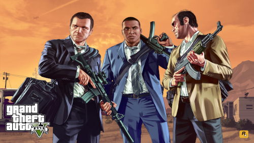
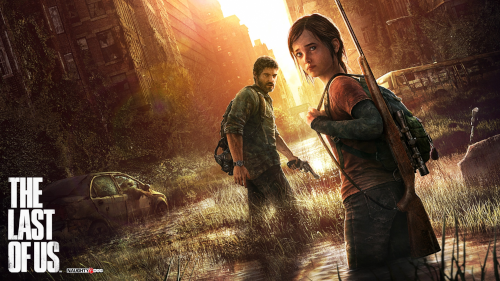
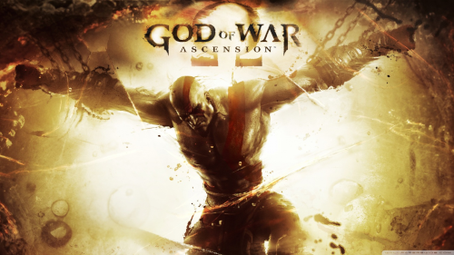
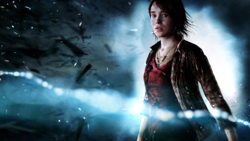
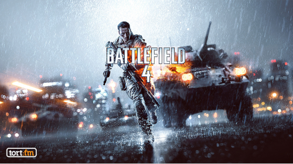
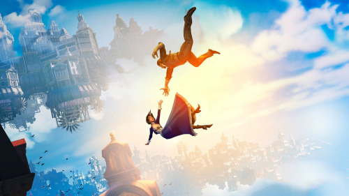
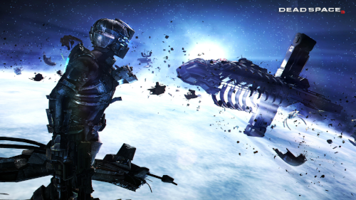

Melhores Games de 2013
1 - Grand Theft Auto V
O jogo se passa no estado ficcional de San Andreas, com a história da campanha um jogador seguindo três criminosos e seus esforços para realizarem assaltos sob a pressão de uma agência governamental. O mundo aberto permite que os jogadores naveguem livremente pelas áreas rurais e urbanas de San Andreas. Assista o trailer.
2 - The Last Of Us
Joel, um sobrevivente solitário e que perdeu sua filha adolescente no início do apocalipse, recebe a missão de levar para fora de uma zona de quarentena uma menina de 14 anos, chamada Ellie. A jovem é a única humana conhecida que é imune ao fungo e se torna a esperança de uma cura. Assista ao trailer.
3 - Assanssin's Creeed Black Flag
Assassin's Creed IV Black Flag segue as aventuras de Edward James Kenway, um notável pirata e corsário que viveu nas Caraíbas durante a Época Dourada da Pirataria no início do século XVIII, pai de Haytham Kenway e avô de Ratonhnhaké:ton (Connor Kenway), os personagens jogáveis de Assassin's Creed III. A história de Edward começa quando este se vê acidentalmente no meio do eterno conflito entre Assassinos e Templários. Enquanto isso os piratas mais famosos se juntaram em Nassau, Bahamas, na tentativa de estabelecer uma das primeiras sociedades democráticas. Assista ao trailer.
4 - God Of War Ascension
O título conta a história de como Kratos quebrou seu juramento com Ares, o Deus da Guerra original. Durante a trama, Kratos descobre que a única forma de acabar com seu laço com Ares é derrotar as três Fúrias Megera, Tisífone e Alecto. Assita o trailer.
5 - Beyond Two Souls
O jogo é centrado em questões sobre aquilo que acontece depois da morte. O jogador controla a personagem Jodie Holmes durante 15 anos (8-23) da sua vida, numa viagem para descobrir o significado de Aiden, uma entidade sobrenatural que está ligada a Jodie desde seu nascimento. Assista o trailer.
6 - Battle Field 4
Battlefield 4 é um jogo eletrônico de tiro em primeira pessoa desenvolvido pela DICE e publicado pela Electronic Arts. É o décimo terceiro título da série, sequência de Battlefield 3, e foi lançado entre outubro e novembro de 2013 para Microsoft Windows, PlayStation 3, Xbox 360, PlayStation 4 e Xbox One. Assista o trailer.
7 - Forza Motorsport 5

Forza Motorsport apresenta um Modo Carreira reformulado, retornando às raízes da franquia. Os jogadores começam com carros mais lentos e, com o tempo, avançam para veículos mais velozes. Essa progressão é dividida em "tours", que impõem restrições com base na classe, nacionalidade e desempenho dos carros. Assita o trailer.
8 - BioShock Infinite
A história acompanha Booker DeWitt, um detetive desacreditado que, para pagar uma dívida, aceita o trabalho nada fácil de explorar a cidade flutuante em busca de uma mulher misteriosa chamada Elizabeth. No entanto, as coisas se complicam quando ele é acusado de ser o “anticristo” de Columbia. Assista o trailer.
9 - DmC: Devil May Cry

A trama de DmC Devil May Cry traz um Dante mais jovem e com uma generosidade fora do comum. Diante de um mundo onde os humanos são enganados por demônios, cabe ao anti-herói iniciar uma jornada para defendê-los da manipulação demoníaca. Assista o trailer.
10 - Dead Space 3
Dead Space 3 (DS3) se passa alguns meses depois de DS2. Isaac está foragido, escondendo-se de tudo e todos em uma colônia na Lua. Ele está cansado da luta contra os Unitologistas e os Necromorphs e abandona seus esforços e sua companheira, Ellie. Assita o trailer.